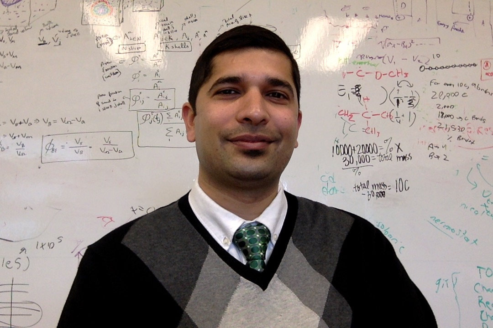

Micron School of Materials Science and Engineering
Boise State University
1910 University Drive
Boise, ID 83725-2090
stephenthomas1@boisestate.edu
Google Scholar, CV
I am a graduate student in the Micron School of Materials Science and Engineering at Boise State University. Previously, I worked as a computer programmer in the domain of life sciences, data visualization, automated testing, machine vision and industrial automation.
My primary research interest is in computational modelling of thermal and mechanical properties of materials that span disparate time and space scales using concurrent coupling methods. Other interests include image processing, particle packing methods and scientific computing using distributed computer networks.
Publications
Peer-reviewed journals
- Thomas, S., Lu, Y., and Garboczi, E. (2015). “Improved Model for Three-Dimensional Virtual
Concrete: Anm Model.” Journal of Computing in Civil Engineering, American Society of Civil
Engineers, 4015027
Peer-reviewed conference proceeding
- Lu, Y., Thomas, S., and Garboczi, E. J. (2015). “Nanotechnology in Construction: Proceedings of
NICOM5.” K. Sobolev and P. S. Shah, eds., Springer International Publishing, Cham, 301–308.
- Lu, Y., and Thomas, S. (2015). “Anm Model Approach for Lunar Soil Simulant Properties Study.”
Earth and Space 2014, American Society of Civil Engineers, 76–83.
Conference/Workshop Talks
- Thomas, S., Lu, Y., and Garboczi, E. “Improved model for 3-D virtual concrete: Anm model”.
Poster presented at Transformational Technologies in Molecular Simulations 2014 Summer School,
University of Wisconsin-Madison, Madison, WI, May 2014.
- Thomas, S., Lu, Y., and Garboczi, E. “Improved model for 3-D virtual concrete: Anm model”.
Poster presented at Transformational Technologies in Molecular Simulations 2014 Summer School,
University of Wisconsin-Madison, Madison, WI, May 2014.
Teaching